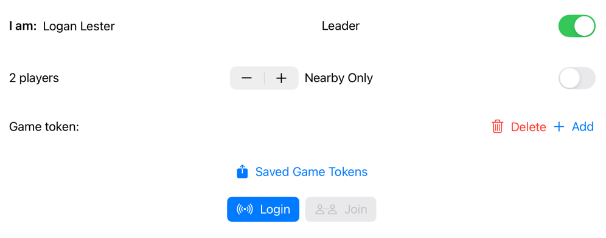

Help is organized as follows.
%appName% does not provide "social" functions for finding like-minded players. Rather, players who want to play together must communicate ahead of time and agree on a few things.
If you identify yourself as leader and set the number of players to one, you are in "solitaire mode". No game token is needed and you can proceed from the player-control view to the game-playing views without further fuss. Solitaire mode is a good way to familiarize yourself with the overall look and feel of the game, and I recommend you use it for that purpose before playing real games with other players. However, %appName% is not intended primarily as a solitaire game.
Most screens shown by %appName% have the following material at the top.
The Players row contains labels for all the players who are in the game. You are represented by the label You. Other players will show up as they join the game. If the expected number of players is known, there may be player slots labelled as "missing" or "searching".
A player label with a running figure in it is the player whose turn it is. The other players will have standing figures.
Below the Players row is a space where the latest chat message is shown. A change to the contents of this area will serve as notice that another player has something to say. In the picture, no chat has occurred yet.
Below the chat message area is a row with three buttons.
When you first open the app, the center of the screen will be occupied by the player-control view, which looks like the following. 
Where you see I am: Logan Lester in the picture, that is the name by which you will be known to the other players. It will appear in chat messages sent by you and in the player labels in the other players' views. The first time you play an arbitrary random name will appear there. You can touch and then overtype this name to identify yourself in any way you prefer. That change will be remembered.
The Leader toggle allows you to assert that you are the Leader for the game. As previously noted, only one player in the game should have this toggle on. The others should have it off.
The stepper for choosing the number o players will appear only if the Leader toggle is on. This is how the leader sets the number of players. It is also how you choose solitaire mode: by setting the number of players to one.
The Nearby Only toggle must be set the same way by all the players. Set it on if the players will be in close proximity and you wish to avoid the step of logging into the server.
The Game token: field is empty in the picture because no game token has been entered. Every player in the game must be using the same game token. To enter a new game token touch the Add button. Once you have entered a game token, it will appear in the Game token: field every time until you delete it or enter a new one. When you have used more than one game token without deleting, you can touch Saved Game Tokens to change which one is active.
The portion of the view devoted to game tokens will disappear in solitaire mode. You will not need a game token if you are not connecting to other players.
The two buttons Login and Join are shown at the bottom, unless you have chosen solitaire mode, in which case there will be a single Play button. The Login button is enabled only if
At the top of this help text is a link for reporting problems. Touching it will bring up an initialized email sending view with the recipient set to the %appName% reporting address and some instructions in the body of the message (which you should delete and replace with your specific problem report).
You can use this capabiity to send any kind of commentary or input that you like, but a key purpose is to support reporting bugs and other problems that you are having with the app. To this end, the email, by default, contains up to two (often just one) logs of recent activity. When you are reporting a serious problem, such as a crash or misbehavior of some sort, it is a good idea to leave these logs in place since they help in diagnosing problems. They include only information about recent sequences of actions inside the app itself and do not include any personal information. However, if you feel more comfortable removing these logs you are free to do so.